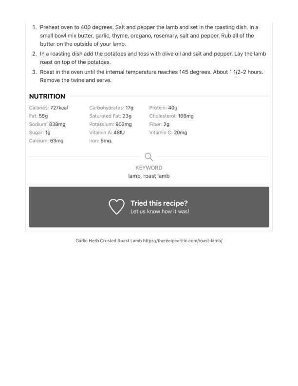

Garlic Herb Crusted Roast Lamb (continued)

Original cookbook page 186
Continuation of the Garlic Herb Crusted Roast Lamb recipe from page 185.
Cook: 1½-2 hours
Ingredients
- Referenced from previous page - includes lamb roast, butter, garlic, thyme, oregano, rosemary, salt, pepper, potatoes, olive oil
Instructions
- Preheat oven to 400 degrees. Salt and pepper the lamb and set in the roasting dish. In a small bowl mix butter, garlic, thyme, oregano, rosemary, salt and pepper. Rub all of the butter on the outside of your lamb.
- In a roasting dish add the potatoes and toss with olive oil and salt and pepper. Lay the lamb roast on top of the potatoes.
- Roast in the oven until the internal temperature reaches 145 degrees. About 1½–2 hours. Remove the twine and serve.
Recipe #186 from collection